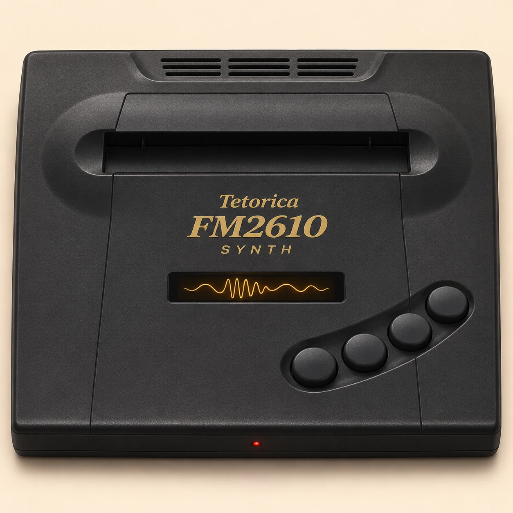

Tetorica FM2610 Synth
YM2610B · 6 FM channels · 8 MHz
Play a key or trigger a sample to start audio.
Output
FM channels
Envelope
Output levels
?
These software levels apply to Keyboard, Code, and VGM. Master adjusts their combined output.